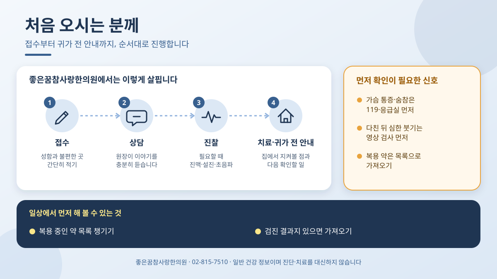
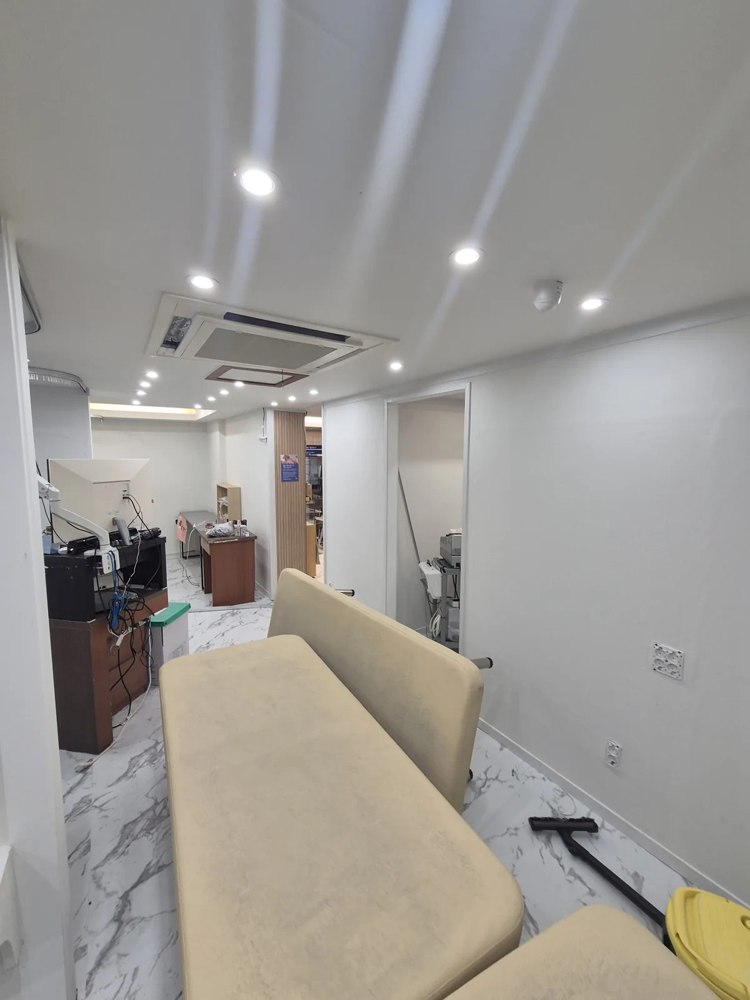
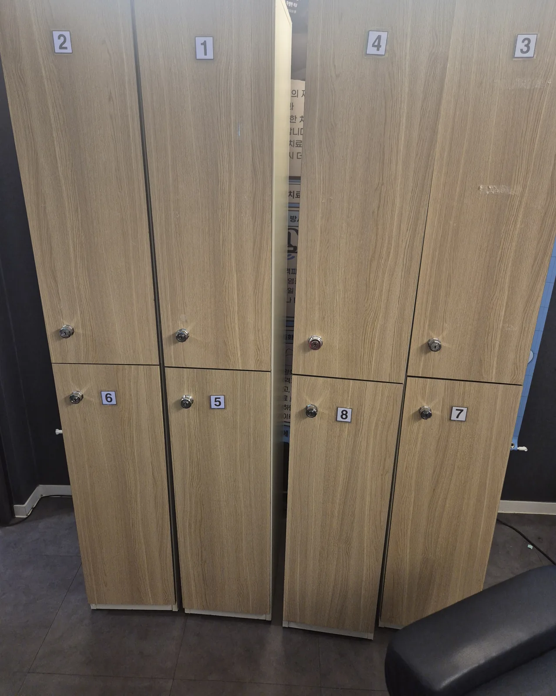
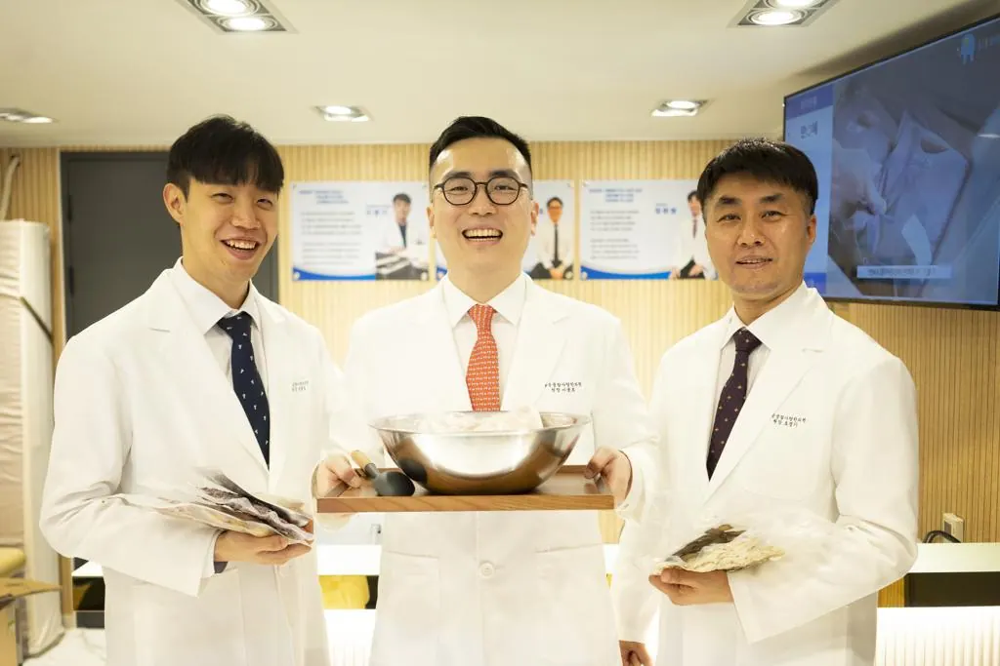
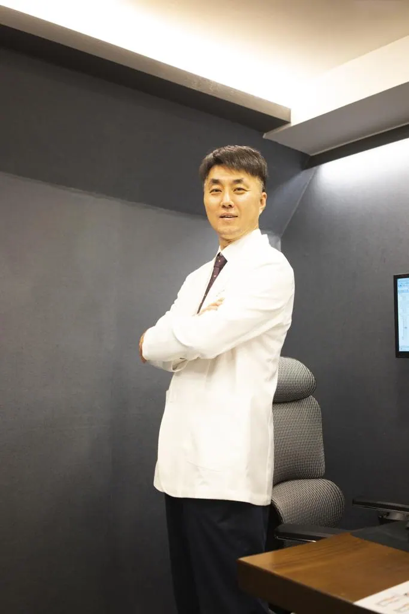
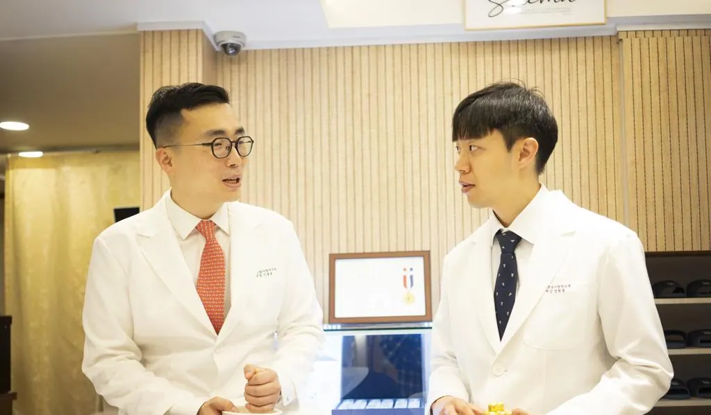

좋은꿈참사랑한의원에 처음 오시면 접수, 상담, 진찰, 치료, 귀가 전 안내 순서로 진행합니다. 복용 중인 약 목록과 건강검진 결과지, 불편한 점을 적은 메모를 챙겨 오시면 상담이 수월하고, 다시 오시면 지난번 이야기부터 이어서 여쭙습니다.



첫 방문, 이렇게 진행됩니다
- 접수: 성함과 불편한 곳을 간단히 적습니다
- 상담: 원장이 이야기를 충분히 듣습니다
- 진찰: 필요하다고 판단될 때 필요한 방법으로 살핍니다
- 치료: 오늘 상태에 맞는 치료를 진행합니다
- 귀가 전 안내: 집에서 지켜볼 점과 다음에 확인할 일을 알려 드립니다
챙겨 오시면 좋은 것
- 복용 중인 약과 영양제 목록(약 봉투나 사진도 괜찮습니다)
- 최근 건강검진 결과지나 다른 병원 검사 결과
- 언제부터, 어떤 동작이나 상황에서 불편한지 적은 메모
- 임신 가능성, 수술이나 시술 예정 여부
- 부모님을 모시고 오실 때는 대신 설명할 내용
일상의 말로 여쭙니다
“무릎이 아프다”에서 한 걸음 더 들어가 “계단을 오를 때와 내려갈 때 중 언제 더 불편한가요?”처럼 일상의 동작으로 여쭙니다. 아픈 곳 하나만이 아니라 몸따삶잘, 곧 몸의 온기·소화·잠·대소변·통증과 생활을 함께 봅니다.
진맥은 모든 분께, 다른 진찰은 필요할 때
진맥은 모든 분께 합니다. 설진(혀 보기), 복진, 초음파 등은 모든 분에게 같은 방식으로 하지 않고 말씀해 주신 증상에 따라 필요하다고 판단될 때만 합니다. 인바디 체성분 분석이나 혈액 관련 검사도 진찰 후 필요하다고 판단될 때만 사용하며, 필요하면 다른 의료기관을 안내합니다.
진료시간과 예약
진료시간은 공개 안내 기준이며 방문 전 확인을 권합니다.
- 평일 09:30~20:00 (점심 13:00~14:00)
- 토요일·일요일·공휴일 09:30~15:00
- 네이버 예약, 카카오톡 상담, 전화 02-815-7510
오시는 길
- 주소: 서울 동작구 만양로2길 2 신성빌딩 3층·5층 (상도동)
- 7호선 상도역 3번 출구에서 약 200m 직진한 뒤 우회전해 약 200m
- 노량진역(1·9호선) 3번 출구에서 약 100m 앞 정류장에서 마을버스 동작01번, 신동아리버파크 정류장 하차
- 건물 옆 뒤쪽 주차 2면, 옆 하늘빛교회 지하주차장 이용 안내
먼저 다른 진료가 필요한 경우
아래와 같은 경우는 응급실이나 해당 진료과 확인이 먼저입니다. 한의원과 병원을 함께 다니실 때는 양쪽에 받고 있는 치료와 약을 알려 주세요.
- 가슴 통증, 숨참, 갑자기 생긴 마비나 어눌한 말(바로 119)
- 높은 열이 이어지거나 의식이 흐린 경우
- 사고 직후 머리를 부딪혔거나 뼈가 부러졌을 수 있는 경우
진료 뒤에 이어지는 것
귀가 전 안내에서 집에서 지켜볼 점과 다음에 확인할 일을 알려 드립니다. 다음 진료 때는 지난 치료 뒤 일상에서 달라진 점이 있었는지부터 여쭙고, 처음부터 다시 설명하지 않으셔도 됩니다. 오래 다니시는 분의 이야기도 처음처럼 이어서 듣습니다.
진료 사이에 새로 시작한 약이나 병원 치료가 있으면 다음 방문 때 꼭 알려 주세요.
상도동·노량진에서
좋은꿈참사랑한의원은 2013년 상도동에서 개원했다고 소개하는 한의원입니다. 7호선 상도역 3번 출구에서 걸어서 오실 수 있고, 7호선 장승배기역에서는 상도역까지 한 정거장입니다. 노량진역에서는 마을버스 동작01번을 타고 신동아리버파크 정류장에서 내리시면 됩니다.
자주 묻는 질문
처음 가면 어떤 순서로 진료하나요?
접수, 상담, 진찰, 치료, 귀가 전 안내 순서로 진행합니다. 상담에서 원장이 불편한 점을 충분히 듣고, 필요하다고 판단될 때 필요한 방법으로 진찰합니다.
예약하지 않고 가도 되나요?
그날 상황에 따라 기다리는 시간이 달라질 수 있어 네이버 예약이나 전화(02-815-7510)로 미리 확인하시길 권합니다.
주말에도 진료하나요?
토요일·일요일·공휴일은 오전 9시 30분부터 오후 3시까지 진료하며 점심시간이 없습니다. 방문 전 진료 여부를 확인해 주세요.
다시 가면 처음부터 다시 설명해야 하나요?
아니요. 지난번 상담 내용을 이어서 여쭙습니다. 지난 치료 뒤 일상에서 달라진 점이 있었는지부터 묻습니다.
모든 사람이 같은 검사를 받나요?
아니요. 진맥, 설진, 초음파 등은 말씀해 주신 증상에 따라 필요하다고 판단될 때만 합니다.
주차할 수 있나요?
건물 옆 뒤쪽 주차 공간 2면이 있고, 옆 하늘빛교회(구 노량진감리교회) 지하주차장도 이용 가능합니다. 자리가 없을 수 있어 대중교통 이용을 함께 권합니다.
부모님을 모시고 가도 되나요?
네. 복용 중인 약 목록과 건강검진 결과지, 불편한 곳을 적은 메모를 챙겨 오시면 진료가 수월합니다. 거동이 불편하시면 이동 방법을 미리 전화로 문의해 주세요.
추나요법은 건강보험이 되나요?
추나요법의 적용 대상과 건강보험 적용 여부, 본인부담금은 진찰 후 안내해 드립니다.
술 마신 다음 날에도 진료받아도 되나요?
받을 수 있지만 전날 마신 양과 지금 몸 상태를 솔직하게 알려 주세요. 속이 불편하거나 어지러우면 치료 방법을 조절합니다.
감수: 좋은꿈참사랑한의원 대표원장 이종호 · 마지막 확인 2026-11-25 · 일반적인 건강 정보이며 진단·치료를 대신하지 않습니다.
처음 오시는 분 글 모아 보기 (70편)

평일에는 시간이 없어 주말에만 한의원에 갈 수 있다면 진료는 어떻게 이어 가나요?
좋은꿈참사랑한의원은 토·일·공휴일에도 오전 9시 30분부터 오후 3시까지 점심시간 없이 진료해 주말에만 오셔도 진료를 이어 갈 수 있습니다. 방문 사이가 긴 만큼 평일의 몸 상태를 짧게 기록해 오시면 지난번 이야기부터 이어서 살피기 쉽습니다.
수정 2026-11-24

다른 의료기관에서 치료를 받다가 옮겨 오면 무엇을 알려 주면 좋을까요?
다른 한의원이나 병원에서 치료를 받다가 오셨다면 그동안 받은 치료와 기간, 검사 결과, 복용 중인 약과 한약을 알려 주세요. 처음부터 다시 묻는 시간을 줄이고 지금 상태에 맞는 방법을 함께 찾는 데 도움이 됩니다.
수정 2026-11-24

할머니·할아버지가 손주를 데리고 처음 한의원에 오실 때는 무엇을 챙기면 되나요?
조부모님이 손주와 함께 오실 때는 아이의 증상 메모와 먹는 약, 알레르기 정보, 부모님 연락처를 챙겨 오시면 수월하며, 치료 방법은 부모님과 통화로 함께 확인한 뒤 정하는 경우가 있습니다.
수정 2026-11-24

대학생이 혼자 처음 한의원에 올 때는 무엇을 준비하면 되나요?
대학생이 혼자 처음 오실 때는 신분증이나 모바일 건강보험증, 복용 중인 약과 영양제 이름, 불편한 증상의 시작 시기와 심해지는 때를 적은 메모를 챙기시면 되며, 처음 오시는 날은 상담 시간이 있어 여유 있게 시간을 잡으시기를 권합니다.
수정 2026-11-24

진료실에서 서 보라고 하거나 걸어 보라고 하는 이유는 무엇인가요?
서 있는 모습, 걷는 모습, 앉는 자세를 직접 보는 것은 통증이 어떤 동작에서 나타나는지와 몸의 균형을 눈으로 확인해 상담과 치료 방향을 정하는 데 참고하기 위해서입니다.
수정 2026-11-24

주말과 공휴일에 한의원 진료를 받으려면 무엇을 확인하면 되나요?
좋은꿈참사랑한의원은 토요일·일요일·공휴일에 오전 9시 30분부터 오후 3시까지 점심시간 없이 진료하므로, 방문 전에 예약 여부와 도착 시각만 확인하면 됩니다.
수정 2026-11-24

한의원과 병원을 함께 다닐 때는 서로 무엇을 알려야 하나요?
한의원과 병원을 함께 다닐 때는 양쪽 모두에 현재 받는 치료와 복용 중인 약, 새로 시작한 치료, 수술 예정을 알려 주시면 겹치거나 충돌하는 부분을 줄이고 안전하게 이어가는 데 도움이 됩니다.
수정 2026-11-24

술을 마신 다음 날에도 한의원 진료를 받아도 되나요?
술을 마신 다음 날에도 한의원 진료를 받을 수 있지만 전날의 음주량과 지금 몸 상태를 솔직하게 알려 주셔야 하고, 속이 불편하거나 어지러우면 치료 방법을 조절해야 하므로 미리 말씀해 주세요.
수정 2026-11-25

부모님을 모시고 한의원에 올 때는 무엇을 준비하면 되나요?
부모님과 함께 오실 때는 복용 중인 약, 건강검진 결과지, 불편한 곳을 적은 메모와 보호자가 보탤 이야기를 미리 정리해 오시면 진료가 한결 수월합니다.
수정 2026-11-24

부모님을 모시고 한의원에 처음 갈 때는 무엇을 확인하면 되나요?
부모님을 모시고 한의원에 처음 갈 때는 복용 중인 약 목록과 예전 검사 결과, 이동 방법과 건물 3층 접근 방법을 미리 확인하면 방문이 한결 편해집니다.
수정 2026-11-24

거동이 불편한 부모님을 모시고 올 때는 무엇을 미리 확인하면 되나요?
거동이 불편한 부모님과 함께 오실 때는 건물 이동 방법과 정차 위치, 진료 시각을 방문 전에 전화로 문의해 두면 당일 부담을 줄일 수 있습니다.
수정 2026-11-24

진료받을 때 '어떤 모습이 되고 싶은지'는 어떻게 말하면 되나요?
진료 목표는 거창하지 않아도 일상에서 달라지길 바라는 구체적인 장면 한두 가지로 말씀해 주시면 되고, 이를 기준으로 다음 진료 때 어떤 점을 이어서 확인할지 함께 정할 수 있습니다.
수정 2026-11-24

혀 가장자리의 이 자국과 혀의 갈라짐은 무엇을 살피는 단서인가요?
혀 가장자리의 이 자국(치흔)과 혀의 갈라짐은 흔히 보이는 모습이며, 한의원에서는 혀의 크기와 물기, 평소의 피로와 붓기, 소화 상태를 함께 묻는 참고 단서로 사용합니다.
수정 2026-11-24
한의원에서 혀를 보는 설진은 무엇을 살피는 검사인가요?
설진은 혀의 색, 모양, 설태, 물기 같은 겉모습을 눈으로 살펴 몸의 전체적인 상태를 가늠하는 한의학의 기본 진찰 방법이며, 혀 하나만으로 병을 단정하지는 않습니다.
수정 2026-11-24
혀의 색과 모양으로 몸 상태를 읽는 방법에는 어떤 한계가 있나요?
혀의 색과 모양은 조명과 직전의 음식, 약, 보는 사람에 따라 달라 보일 수 있어서 설진은 참고 자료일 뿐이며, 증상과 문진, 필요한 검사를 함께 보고 판단합니다.
수정 2026-11-24

혀에 하얗거나 노란 막이 끼는 설태는 무엇을 뜻하나요?
설태는 혀 표면에 끼는 얇은 막으로 건강한 사람에게도 옅게 있으며, 한의원에서는 색과 두께, 물기를 참고 단서로 보되 한 번의 모습으로 결론을 내리지 않습니다.
수정 2026-11-24

진료 전에 하고 싶은 말을 세 줄로 정리하면 상담이 어떻게 달라지나요?
가장 불편한 점, 언제부터 어떻게 달라졌는지, 진료에서 바라는 점을 세 줄로 정리해 가면 상담 시간이 길지 않아도 핵심이 빠지지 않고 전달되어 진료 방향을 정하기 쉬워집니다.
수정 2026-11-25

진료를 받은 뒤 증상이 달라졌을 때는 어떻게 연락하고 무엇을 알리나요?
진료를 받은 뒤 증상이 달라졌다면 언제부터 어떻게 달라졌는지 시각과 상황을 메모해 한의원에 알려 주시고, 갑자기 심해지거나 응급이 의심되면 연락보다 119나 응급실을 먼저 이용하세요.
수정 2026-11-24

먹고 있는 영양제와 건강식품은 한의원에 어떻게 알리면 되나요?
먹고 있는 영양제와 건강식품은 이름과 성분, 하루 양, 먹기 시작한 시기를 제품 사진이나 메모로 알려 주시면 한약 상담 때 겹치는 부분을 확인하는 데 도움이 됩니다.
수정 2026-11-25

사상체질은 무엇이고 한방 이론으로서 어떤 한계가 있나요?
사상체질은 사람을 태양인·소양인·태음인·소음인의 네 가지 경향으로 나누어 이해하는 한방 이론이며, 과학적 근거가 제한적이라 진단이나 처방을 단정하는 기준이 아닌 참고 자료로 씁니다.
수정 2026-11-24
체질 상담 결과가 한의원마다 다르게 나오면 어떻게 이해하면 되나요?
사상체질은 근거가 제한적인 한방 이론이며 판단 기준과 관찰 방법이 달라 결과가 다르게 나올 수 있으므로, 하나의 결과에 얽매이기보다 생활과 증상을 함께 보는 참고 자료로 받아들이시면 됩니다.
수정 2026-11-24

상도역 3번 출구에서 한의원까지는 어떻게 걸어가나요?
7호선 상도역 3번 출구에서 약 200m 직진한 뒤 오거리에서 상도노빌리티 상가를 오른쪽에 끼고 우회전해 약 200m 올라오면, 신동아리버파크 후문 사거리 우측 첫 번째 건물 3층이 한의원입니다.
수정 2026-11-24

상도동에서 저녁 8시까지 진료하는 한의원에서는 어떤 상담을 받을 수 있나요?
좋은꿈참사랑한의원은 평일 저녁 8시까지 진료해, 퇴근이나 하교 뒤에도 통증·잠·소화·한약 상담과 교정추나, 침, 초음파 진단을 이어서 상담할 수 있습니다.
수정 2026-11-24
재진 때 한의원에서는 지난번 이후 무엇을 확인하나요?
좋은꿈참사랑한의원은 재진 때 지난번 이야기부터 이어서 여쭙고, 불편과 생활의 변화, 새로 먹기 시작한 약, 다음에 확인할 일을 함께 점검합니다.
수정 2026-11-24
운동을 꾸준히 하는 분은 진료 전에 무엇을 알려야 하나요?
꾸준히 운동하는 분은 운동의 종류와 횟수, 강도, 최근 늘린 운동량, 다친 적이 있는지를 알려 주시면 통증의 원인을 가늠하고 진료 뒤 운동을 이어갈 방법을 정하는 데 도움이 됩니다.
수정 2026-11-24
비 오는 날이나 눈 오는 날에 한의원을 방문하려면 어떻게 준비하면 되나요?
비나 눈이 오는 날에는 미끄럽지 않은 신발과 여벌 양말, 우산을 챙기고 이동 시간을 15~20분 넉넉히 잡으며, 늦어질 것 같으면 미리 한의원에 연락하는 것이 좋습니다.
수정 2026-11-25
진료를 시작하기 전에 물어보면 좋은 질문에는 어떤 것이 있나요?
진료를 시작하기 전에는 오늘 어떤 진찰과 치료를 하는지, 불편하면 어떻게 알리는지, 진료 뒤 조심할 점과 다음 방문 시기를 물어보시면 궁금증이 풀리고 안심하고 진료를 받는 데 도움이 됩니다.
수정 2026-11-24

한의원에서 손목 맥을 짚는 진맥은 무엇인가요?
진맥은 손목 맥박의 빠르기, 세기, 리듬 같은 특징을 손끝으로 느껴 몸의 전체적인 경향을 살피는 한의학의 진찰 방법이며, 문진과 함께 참고하는 자료입니다.
수정 2026-11-24

이전에 받은 한약 봉투나 처방 메모는 진료 때 어떻게 활용하나요?
이전에 받은 한약 봉투나 처방 메모는 약의 이름과 복용 기간, 먹은 뒤 몸의 반응을 이어서 확인하는 자료가 되므로 버리지 말고 사진으로 남겨 진료 때 보여 주시면 도움이 됩니다.
수정 2026-11-24

약침을 받기 전에 한의원에 꼭 알려야 하는 것은 무엇인가요?
약침을 받기 전에는 알레르기와 약물 이상 반응 경험, 복용 중인 약, 임신 여부, 출혈 경향, 지난 병력을 한의원에 알려야 안전하게 치료 방법을 정할 수 있습니다.
수정 2026-11-24
약침은 무엇이고 일반적으로 어떻게 사용하나요?
약침은 한약재에서 추출해 정제한 약액을 경혈이나 통증 부위 주변에 소량 주입하는 한방 치료 방법으로, 사용 여부와 종류는 진찰 후 필요하다고 판단될 때 상담해 정합니다.
수정 2026-11-24
노량진역에서 좋은꿈참사랑한의원까지는 어떻게 가나요?
1·9호선 노량진역 3번 출구에서 약 100m 직진한 곳의 마을버스 정류장에서 동작01번을 타고 신동아리버파크 정류장에서 내리면, 건너편 건물 3층에 좋은꿈참사랑한의원이 있습니다.
수정 2026-11-24
마스크를 오래 쓰거나 알레르기가 있는 사람은 진료 전에 무엇을 알려야 하나요?
음식, 약, 소독제, 금속, 테이프 등에 반응한 적이 있다면 이름과 증상을 미리 적어 두고 진료 시작 때 알려야 처치 방법과 한약 처방을 안전하게 조정할 수 있습니다.
수정 2026-11-25

불편한 곳이 여러 군데일 때는 무엇부터 말씀드리면 되나요?
불편한 곳이 여러 군데라면 일상에서 특히 힘든 한두 가지를 먼저 말하고 나머지는 짧게 덧붙이시면 되며, 여러 증상이 서로 관련 있는지는 진료실에서 함께 살펴 정리합니다.
수정 2026-11-24

점심시간에 짬을 내어 한의원에 가려는 직장인은 진료 시간을 어떻게 맞추면 되나요?
좋은꿈참사랑한의원은 평일 오후 1시부터 2시까지가 점심시간이라 그 시간에는 진료를 받기 어려워, 점심 직전이나 오후 2시 이후, 또는 저녁 8시까지인 퇴근 후 시간대로 일정을 잡는 편이 현실적입니다.
수정 2026-11-24
예약 시간에 늦거나 일정을 바꿔야 할 때는 어떻게 하나요?
예약 시간에 늦거나 일정을 바꿔야 할 때는 네이버 예약 화면이나 전화(02-815-7510)로 미리 알려 주시면 방문 시간을 다시 맞출 수 있습니다.
수정 2026-11-24
카카오톡 채팅 상담으로 방문 전에 무엇을 물어볼 수 있나요?
좋은꿈참사랑한의원은 카카오톡 채팅 상담으로 방문 시간, 오시는 길, 받을 수 있는 진료와 준비할 것을 문의할 수 있으며, 진단과 처방은 방문 진료에서 정합니다.
수정 2026-11-24

야근이나 교대근무로 방문 일정이 불규칙할 때는 어떻게 계획하나요?
야근이나 교대근무로 일정이 들쑥날쑥하다면 한 달 근무표를 보고 가능한 요일과 시간대를 미리 정해 두고, 일정이 바뀌면 예약을 변경해 이어 가시면 진료가 끊기지 않게 하는 데 도움이 됩니다.
수정 2026-11-24

한의원 문진에서 몸의 따뜻함, 소화, 잠, 대소변, 통증은 왜 함께 묻나요?
한의원 문진은 아픈 곳 하나만 묻지 않고 몸의 온기, 소화, 잠, 대소변, 통증을 함께 묻는데, 이는 증상이 생활 전체와 이어져 나타나는 경우가 많다고 보기 때문입니다.
수정 2026-11-24

한의원 초진 때는 어떤 질문을 받나요?
한의원 초진에서는 불편한 곳이 언제부터 어떻게 달라졌는지와 함께 잠·식사·대소변·복용 중인 약 같은 생활 전체를 묻고, 필요하다고 판단될 때 진찰과 검사를 이어서 합니다.
수정 2026-11-24

한의원에 얼마 간격으로 방문할지는 어떻게 정하나요?
방문 간격은 증상의 종류와 정도, 받는 치료, 생활 일정에 따라 달라지며, 처음에는 상태를 보며 정하고 이후 달라진 점을 확인해 조정하는 것이 일반적이라 정해진 횟수를 미리 약속하지는 않습니다.
수정 2026-11-25

한의원 진료비는 어디서 어떻게 확인하나요?
진료비는 접수할 때나 진료 설명을 들을 때 항목별로 문의해 확인하는 것이 안전하며, 건강보험 적용 여부와 자동차보험·실손보험 관련 서류도 함께 물어보면 좋습니다.
수정 2026-11-24
받아 온 한약은 어떻게 보관하고 데워서 먹으면 되나요?
한약 보관과 데우는 방법은 포장 형태와 처방에 따라 달라서 받을 때 들은 안내를 먼저 따르고, 변질이 의심되는 냄새나 모양이 있으면 먹지 말고 문의하시는 것이 안전합니다.
수정 2026-11-25
한약은 식전과 식후 중 언제 먹는지, 일반적으로 어떻게 안내하나요?
한약 복용 시간은 처방과 소화 상태, 생활 시간에 따라 달라서 받은 안내를 우선하며, 일반적인 원칙은 정해진 시간에 규칙적으로 먹고 불편하면 임의로 바꾸지 않고 상의하는 것입니다.
수정 2026-11-24
한약을 먹다가 속이 불편하거나 피부에 이상이 생기면 어떻게 알려야 하나요?
한약 복용 중 속 불편, 설사, 두드러기, 두근거림 같은 변화가 생기면 임의로 양을 바꾸지 말고 언제부터 어떤 증상인지 적어 한의원에 알리고, 심한 증상은 복용을 멈추고 응급 진료를 받으세요.
수정 2026-11-24
한약 상담은 어떤 순서로 진행되나요?
한약 상담은 불편한 곳과 생활을 묻고, 복용 중인 약과 체질, 소화와 잠을 확인한 뒤 필요하다고 판단될 때 처방 방향을 설명하고 함께 정하는 순서로 진행되며, 한약은 원내에서 탕전합니다.
수정 2026-11-24
온열 치료를 받기 전에 먼저 알려야 하는 분은 어떤 경우인가요?
감각이 둔하거나 당뇨, 혈액 순환 문제가 있는 분, 임신 중인 분, 피부가 약한 분, 열이 있거나 부은 부위가 있는 분은 온열 치료 전에 미리 알려야 안전하게 방법을 정할 수 있습니다.
수정 2026-11-24
온열 치료를 받을 때 온도는 어떻게 확인하나요?
온열 치료는 따뜻한 열을 치료 부위에 전달하는 방법으로, 피부 감각과 몸 상태가 사람마다 달라 시작 전과 중간에 뜨겁지 않은지 확인하고 온도와 시간을 조정하며 진행합니다.
수정 2026-11-24
보호자가 대신 상담을 해야 할 때는 어떤 내용을 정리해서 알려야 하나요?
환자가 직접 설명하기 어려울 때는 보호자가 증상의 시작과 변화, 복용 중인 약, 식사·수면·대소변 상태를 날짜 순으로 정리하고 직접 본 것과 들은 것을 나누어 전하면 상담이 정확해집니다.
수정 2026-11-25
혼자 한의원에 오시는 어르신은 접수와 진료 때 무엇을 준비하면 되나요?
혼자 오시는 어르신은 복용 중인 약 이름과 불편한 곳, 시작된 때를 큰 글씨로 적어 오고 안경이나 보청기를 챙기면 접수와 상담이 한결 수월하며, 천천히 다시 설명해 달라고 편하게 요청하셔도 됩니다.
수정 2026-11-24
침 치료를 받기 전에 식사는 어떻게 하면 되나요?
침 치료 전에는 너무 허기지거나 과식한 상태를 피하고 평소 식사 시간에 맞춰 가볍게 드시고 오시도록 안내하며, 예전에 침이나 주사 때 어지러웠던 적이 있다면 미리 알려 주세요.
수정 2026-11-24
진료를 받고 바로 운전해도 되는지 궁금할 때는 무엇을 확인하나요?
진료 뒤 운전이 걱정된다면 받은 치료의 종류와 몸의 느낌을 기준으로 확인해야 하며, 어지럽거나 졸리거나 몸이 풀려 집중이 어렵다면 잠시 쉬거나 다른 방법으로 이동하시기를 권합니다.
수정 2026-11-24
한약을 먹는 동안 커피나 차는 마셔도 되나요?
한약을 먹는 동안 커피와 차는 종류와 양, 마시는 시간에 따라 안내가 달라질 수 있으므로 평소 마시는 양을 알려 주시고 처방한 한의사의 안내를 따르시면 됩니다.
수정 2026-11-24

한의원에 차를 가져가면 어디에 주차하나요?
좋은꿈참사랑한의원은 건물 옆 뒤쪽에 주차 공간 2면이 있고 옆 하늘빛교회(구 노량진감리교회) 지하주차장도 이용할 수 있어, 방문 전에 자리를 확인하면 편합니다.
수정 2026-11-24
오래된 지병이 있을 때 병력은 어떻게 정리해 가면 되나요?
오래된 지병이 있다면 진단받은 시기, 복용 중인 약, 최근 검사 시기, 입원이나 응급 경험을 한 장에 간단히 정리해 가시면 진료 시간이 알차게 쓰이고 안전한 진료를 정하는 데 도움이 됩니다.
수정 2026-11-24
한약 복용 시간을 지키기 어려운 바쁜 사람은 한의원과 어떻게 상의하면 되나요?
출근과 식사 시간이 불규칙한 사람은 하루 일정을 처음 상담 때 솔직히 알려 지킬 수 있는 복용 시간대를 한의사와 함께 정하는 편이 현실적이며, 복용 방법은 임의로 바꾸지 않고 먼저 상의합니다.
수정 2026-11-25
해외 출장 전후에 한의원 방문은 어떻게 계획하면 되나요?
해외 출장 전에는 일정과 복용 중인 약을 알려 상담 범위를 정하고, 돌아온 뒤에는 시차와 피로가 어느 정도 가라앉은 시점에 잠과 소화가 돌아오는지 정리해 다시 확인하는 순서가 무난합니다.
수정 2026-11-25
다른 병원에서 받은 검사 결과는 한의원에 어떻게 가져가면 되나요?
다른 병원의 검사 결과는 종이 결과지나 사진, 병원 앱 화면으로 가져오시면 되고, 검사 날짜와 병원 이름이 보이게 챙기면 상담 때 현재 상태를 이해하는 데 도움이 됩니다.
수정 2026-11-24
한의원 예약은 네이버 예약과 전화 중 어떻게 하면 되나요?
좋은꿈참사랑한의원은 네이버 예약, 전화(02-815-7510), 카카오톡 채팅 상담으로 문의할 수 있어, 편한 방법을 골라 방문 시간을 정하면 됩니다.
수정 2026-11-24
수업 사이 짬이 나는 학생은 한의원 방문 일정을 어떻게 잡으면 되나요?
학생은 수업과 이동 시간을 포함해 여유 있게 일정을 잡고, 평일은 저녁 8시까지 토·일·공휴일은 오후 3시까지인 진료 시간 안에서 시험과 과제가 몰리지 않는 날을 고르는 것이 좋습니다.
수정 2026-11-24
한의원 방문 전에 혀는 어떻게 두면 진료가 정확해지나요?
방문 직전에는 혀를 세게 닦거나 색이 진한 음식과 음료를 피하고, 평소 하던 만큼만 양치한 뒤 편안한 상태로 오시면 혀의 평소 모습을 살피는 데 도움이 됩니다.
수정 2026-11-24
맥을 짚기 전에 운동이나 카페인은 어떻게 하면 되나요?
맥은 운동 직후나 카페인, 긴장에 따라 빨라질 수 있어서, 도착한 뒤 잠시 앉아 숨을 고르고 평소와 다른 점을 말씀해 주시면 진맥을 참고하는 데 도움이 됩니다.
수정 2026-11-24
침 치료를 받은 날에는 샤워나 운동을 해도 되나요?
침 치료 뒤 일상생활은 대부분 평소처럼 이어가지만 침 자리를 문지르거나 무리한 운동은 피하고, 샤워와 음주는 받은 안내를 따르며 불편하면 한의원과 상의하시는 것이 좋습니다.
수정 2026-11-24
침이 무서울 때는 한의원에 어떻게 말하면 되나요?
침이 무서운 것은 흔한 일이므로 진료 시작 때 두려움을 솔직하게 알리시면 설명과 속도, 자세를 조절하며 진행할 수 있고, 불편하면 언제든 중단을 요청하실 수 있습니다.
수정 2026-11-24
침을 맞은 자리에 멍이 들거나 뻐근한 느낌이 남는 것은 괜찮은가요?
침 치료 뒤에 작은 멍이나 뻐근한 느낌이 일시적으로 생길 수 있지만, 통증이 심해지거나 붓고 열감이 있거나 며칠 지나도 그대로라면 한의원에 알려 상태를 확인하시는 것이 좋습니다.
수정 2026-11-24
한의원 가기 전에 복용 약 목록은 어떻게 정리하면 좋나요?
진료 전에는 약 이름과 용량, 복용 시간, 처방한 병원, 영양제와 건강기능식품을 한 장에 정리해 오시면 안전한 진료에 도움이 되며 약은 임의로 중단하지 않습니다.
수정 2026-11-24
진료 전에 증상은 어떻게 메모하면 상담이 잘 되나요?
증상 메모는 아픈 곳 이름보다 어떤 동작에서 언제부터 얼마나 불편한지를 적는 것이 도움이 되며 변화가 있으면 날짜와 함께 한두 줄로 남기면 다음 진료에서 이어서 확인하기 좋습니다.
수정 2026-11-24
한약을 먹는 동안 양약과 음식은 어떻게 알려 주면 되나요?
한약을 드시기 전에는 복용 중인 약과 영양제, 지병과 알레르기를 모두 알려 주시고, 복용 중 피해야 할 음식은 처방한 한의원에 확인하도록 안내합니다.
수정 2026-11-24
한의원에 처음 가면 어떤 순서로 진료하고 무엇을 준비하나요?
처음 오시면 접수, 상담, 진찰, 치료, 귀가 전 안내 순서로 진행하며, 복용 중인 약과 검진 결과, 불편한 동작을 적은 메모를 가져오시면 상담이 한결 쉬워집니다.
수정 2026-11-24
저녁 진료 시간에 처음 방문하려면 어떻게 준비하면 되나요?
좋은꿈참사랑한의원은 평일 저녁 8시까지 진료하므로, 퇴근 뒤 처음 방문할 때는 접수 가능한 시각을 미리 확인하고 증상 메모와 복용 약 목록을 챙겨 오시면 상담이 구체적으로 이어집니다.
수정 2026-11-24